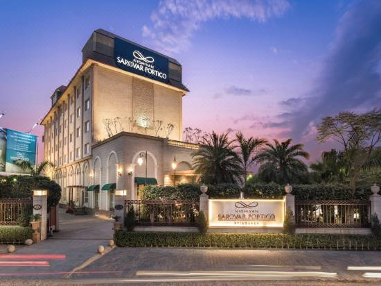
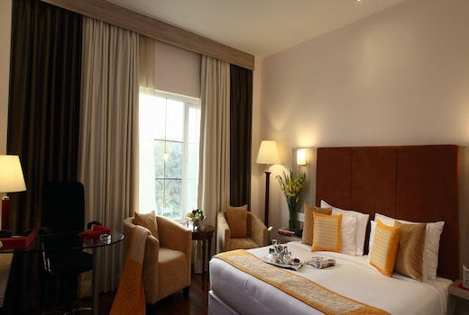
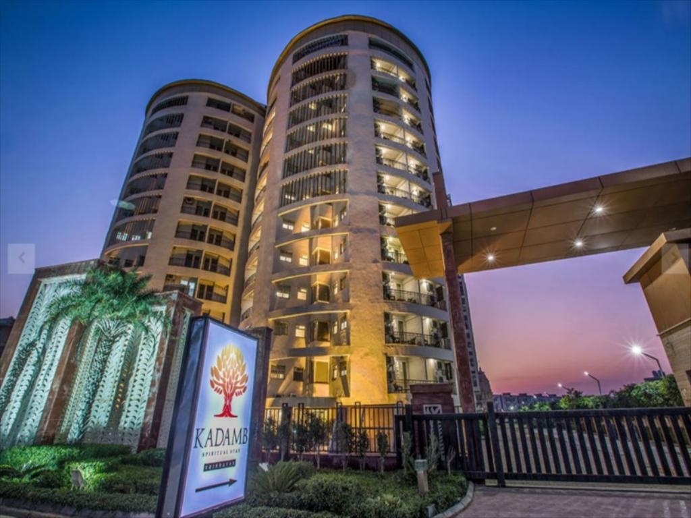
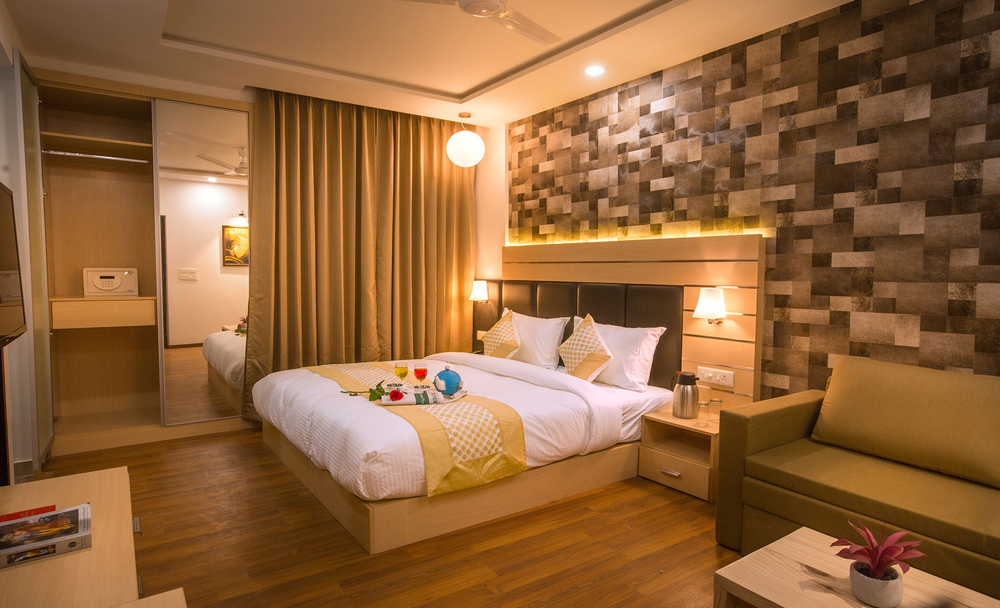
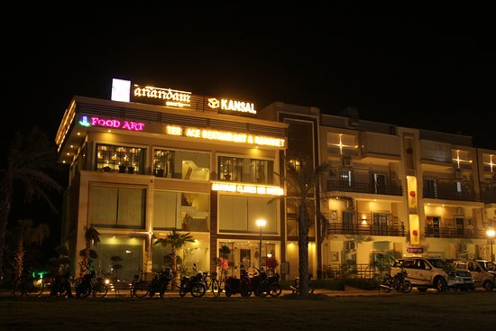
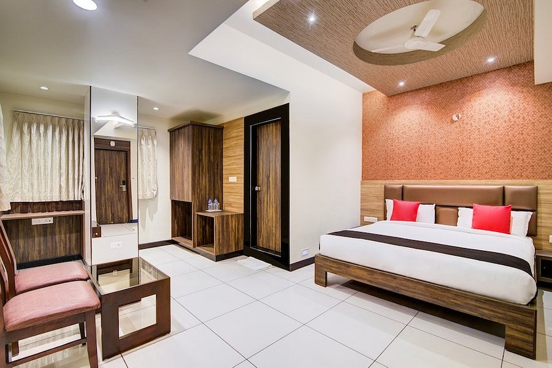
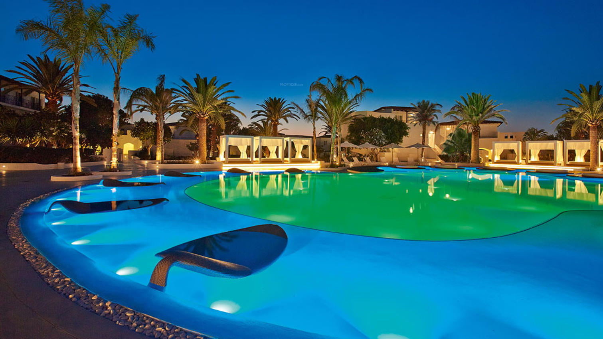
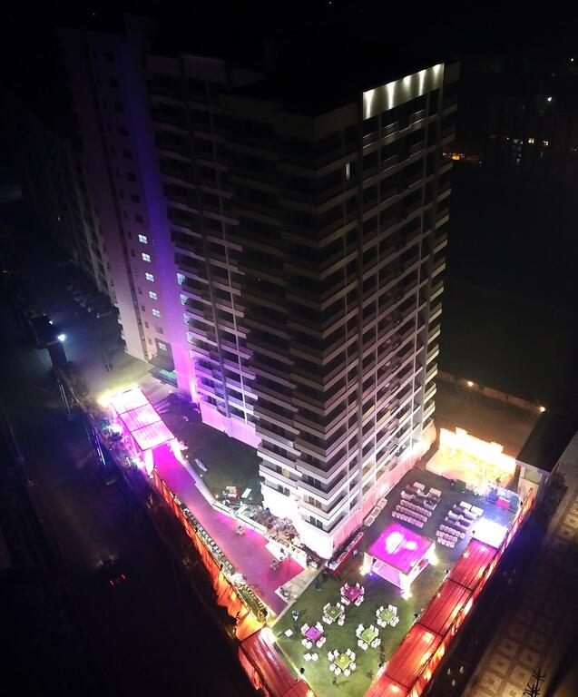

Location ; Khasra No. 797, Gopalgarh Tehra Road, near Kanha Makhan Public School , Vrindavan, Mathura,, 281121 Vrindavan, India

Situated 4 km from the historic and magnificent Banke Bihari ji Temple, Nidhivan Hotels & Resorts offers a 24-hour front desk and free Wi-Fi throughout the property. The property also features access facilities for the physically challenged, a salon on premise as well as free parking facilities.
The property is located 2.5 km from the magnificent ISKCON Temple. The nearest bus stand is 2 km away. Agra Air Force Station is 22 km away and Mathura Railway Station is 16 km away.
Each elegant air-conditioned room features an ample seating area with a sofa and is equipped with a flat-screen TV, electronic safe, wardrobe, desk and telephone. The attached bathroom has shower facilities .

Guests can approach the tour desk or the concierge. Car rental, luggage storage and laundry/dry-cleaning facilities are on offer. A business centre and meeting and banquet space are also present.
Tripti Restaurant serves pan-Indian vegetarian cuisine. Room service options are also available.
Koshda Mandakini - in front of Prem Temple Keshav Dham Road, Keshav Nagar Vrindavan, India, Chaitanya Vihar, Vrindavan, India, 281121

Conveniently located in Vrindavan, Kadamb Resort Spritual Stay is a great base from which to explore this vibrant city. From here, guests can make the most of all that the lively city has to offer. With its convenient location, the property offers easy access to the city's must-see destinations.

At Kadamb Resort Spritual Stay, the excellent service and superior facilities make for an unforgettable stay. Guests can enjoy on-site features like 24-hour room service, 24-hour security, 24-hour front desk, Wi-Fi in public areas, car park.
All guest accommodations feature thoughtful amenities to ensure an unparalleled sense of comfort. The property's host of recreational offerings ensures you have plenty to do during your stay. Enjoy a great location and services to match at Kadamb Resort Spritual Stay.
Vaidya Laxminarayan Marg , 281001 Vrindavan, India

Vrinda Anandam Resort in Vrindavan provides accommodation with an outdoor swimming pool, a garden and a terrace. Among the facilities of this property are a restaurant, a 24-hour front desk and room service, along with free WiFi. Private parking can be arranged at an extra charge.

All rooms at the hotel are fitted with a seating area and a flat-screen TV. The rooms at Vrinda Anandam Resort have air conditioning and a wardrobe.
A buffet breakfast is available each morning at the accommodation.
Guests at Vrinda Anandam Resort will be able to enjoy activities in and around Vrindavan, like cycling.
Chhatikara Road Kanha Heights Near Kanha Makhan School , rukmani vihar, 281121 Vrindavan, India

Hotel Krishna Vaibhav offers air-conditioned rooms in Vrindavan. Featuring a 24-hour front desk, this property also provides guests with a restaurant. Private parking can be arranged at an extra charge.

The units in the hotel are equipped with a kettle. At Hotel Krishna Vaibhav all rooms are equipped with a flat-screen TV, a private bathroom, and a balcony with pool view.
Guests at the accommodation can enjoy a vegetarian breakfast.